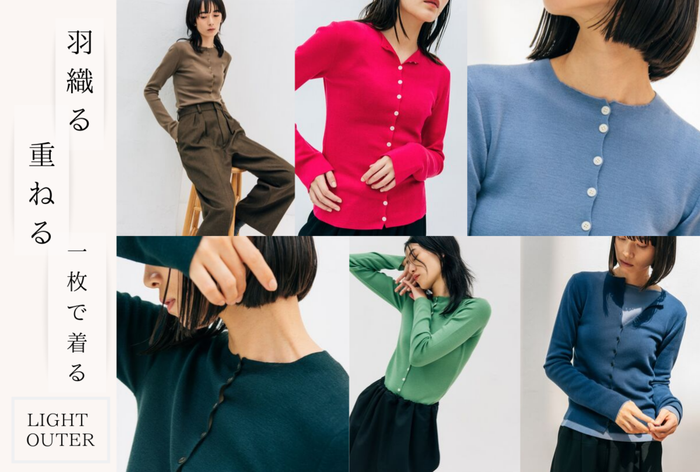

FEATURE 2019.10.10
「羽織る・重ねる・一枚で着れる」
3wayで着られる万能アイテム。
10月に入り、すっかり秋の陽気に
気温も下がり過ごしやすい日々が続いていますね
冬支度をはじめようと考えている方も多いのでは。
しかし、日中になると暖かくなる日も多く、
毎日の洋服選びに困る季節。
そんな季節に欠かせない”ライトアウター”が入荷いたしました。
10月に入り、すっかり秋の陽気に
気温も下がり過ごしやすい日々が続いていますね
冬支度をはじめようと
考えている方も多いのでは。
しかし、日中になると暖かくなる日も多く、
毎日の洋服選びに困る季節。
そんな季節に欠かせない
”ライトアウター”が入荷いたしました。
きれい色ピンクで女性らしさを
とろみ素材なので、一枚で着ても肌触りが良く、
ボタンを少し開けて着ることで
女性らしさをプラス
華やかなフューシャピンクが
スタイリングのアクセントになる一着
シンプルなアイテムとの相性も抜群。
素材:メリノオプティモ
サイズ：R/L
落ち着いた女性らしさを演出
落ち着いたアクアブルーが
スタイリングをクリアな印象に
インナーをチラ見せレイヤードするのも
コーディネートの幅が広がりますよね。
タートルインナーを合わせれば
首元も温かく、心地よく過ごせるはず。
素材:メリノオプティモ
サイズ：R/L
秋冬カラーで明るさをキープ
クリアなセージグリーンは
シックな秋冬カラーとも好相性。
ブラウンやブラックの
シンプルなボトムに合わせても
明るさをキープしてくれます。
白いＴシャツを胸元から
見せることでカジュアルな印象に。
素材:メリノオプティモ
サイズ：R/L
普段使いしやすいカラー
トラッドなスタイルにもマッチする
フォレストグリーンでクラシックな印象に。
深みのあるカラーはデニムとも好相性。
普段使いしやすく、
カジュアルに着こなせるのがポイント。
素材:メリノオプティモ
サイズ：R/L
取り入れやすい爽やかブルー
澄んだ冬の空のようなサックスブルーが爽やか
コーディネートにも取り入れやすく
ホワイトのボトムスを合わせることで
女性らしいスタイリングを楽しめます。
ボリューム感のある
フレアスカートと合わせるのも。
素材:メリノオプティモ
サイズ：R/L
ワントーンコーデに挑戦
ワントーンコーデにも取り入れやすいアイテムです。
どんなスタイリングにも
馴染むグレーがかったベージュで
洗練された大人の雰囲気に
パンツやスカートにインすると
カジュアルな印象に。
素材:メリノオプティモ
サイズ：R/L